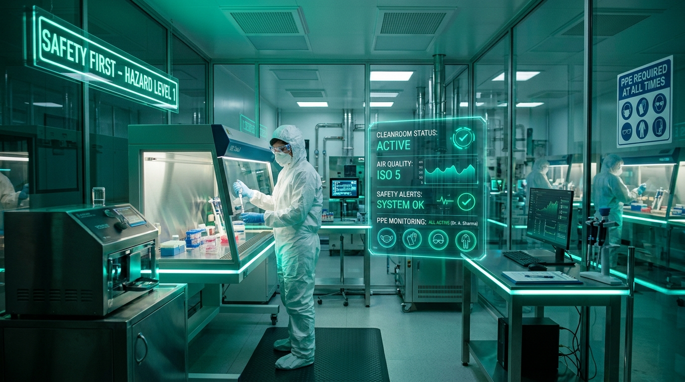
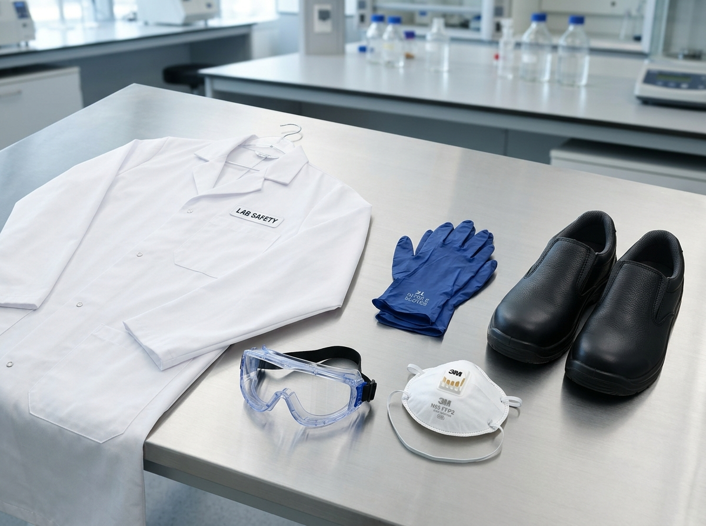

Indeks Kepatuhan K3
96.74%
Rata-rata kepatuhan praktikum mahasiswa farmasi
Memuat sistem edukasi keselamatan kerja & laboratorium...
Platform referensi komprehensif Keselamatan, Kesehatan Kerja, dan Lingkungan (K3L). Dirangkum dari publikasi ilmiah tentang urgensi K3, audit 7 indikator keselamatan laboratorium kimia farmasi, serta pembudayaan K3 sejak dini di institusi pendidikan.

Pilih materi di bawah ini untuk membuka halaman pembelajaran lengkap yang berbasis riset jurnal ilmiah terakreditasi, standar operasional, dan instrumen interaktif.
Pelajari landasan hukum UU No. 1 Tahun 1970, 3 pilar K3L (Safety, Health, Environment), dan spektrum konsekuensi kelalaian kerja dari luka ringan hingga fatal.
Evaluasi 7 indikator kepatuhan di laboratorium kimia (rata-rata kepatuhan 96.74%), SOP penanganan bahan, serta telaah kasus ledakan dan kebakaran lab nyata.
Klasifikasi 5 potensi bahaya menurut Dr. Suma'mur P.K. (Fisik, Kimia, Biologi, Ergonomi, Psikologi) serta panduan spesifikasi APD laboratorium wajib.
Eksplorasi interaktif 9 simbol piktogram Globally Harmonized System (GHS), rambu larangan, instruksi wajib, dan rambu evakuasi darurat laboratorium.
Visualisasi grafik bar kepatuhan K3, diagram donat distribusi bahaya kerja, serta data komparasi efektivitas Pre-Test vs Post-Test pembudayaan K3 (p = 0.000).
Instrumen mandiri untuk mengukur persentase kesiapsiagaan laboratorium Anda secara langsung dan kuis interaktif dengan umpan balik penjelasan ilmiah.
Daftar 3 artikel jurnal ilmiah nasional terakreditasi yang menjadi sumber rujukan empiris konten SafeSphere K3 beserta metodologi dan sitasinya.
Profil para kolaborator yang berkontribusi dalam perancangan antarmuka, studi pustaka jurnal keselamatan kerja, dan pemrograman sistem.
Berdasarkan telaah editorial Jurnal Keselamatan, Kesehatan Kerja dan Lingkungan (JK3L) oleh Aulia Rahman (2020), K3L merupakan pilar esensial dalam setiap denyut aktivitas manusia. Pengabaian terhadap salah satu unsurnya berakibat fatal bagi pekerja, aset, maupun masyarakat.
Berfokus pada perlindungan fisik tenaga kerja dari risiko kecelakaan langsung saat menjalankan tugas operasional, pekerjaan proyek, maupun praktikum laboratorium.
Kajian mendalam terhadap pencegahan timbulnya Penyakit Akibat Kerja (PAK), baik berupa efek jangka pendek (pusing, mual, alergi) maupun gangguan fatal kronis.
Memastikan seluruh sisa aktivitas kerja, uap beracun, dan limbah kimia tidak dibuang sembarangan ke tanah, air, atau udara yang dapat merusak biosfer alam.
Seperti dipaparkan dalam editorial JK3L, konsekuensi risiko merentang dari tingkat cidera ringan hingga kecacatan permanen dan kehilangan nyawa:
Luka gores benda tajam, iritasi mata ringan akibat uap zat volatil, atau pusing sesaat karena sirkulasi minim.
Percikan asam/basa kuat melukai epidermis kulit, dermatitis kontak kronis, dan sesak napas akut.
Trauma fisik jatuh dari ketinggian, tertimpa alat berat, dan kerusakan saraf pendengaran permanen.
Keracunan uap sianida, sengatan listrik tegangan tinggi, ledakan reaktor lab, dan serangan jantung fatal.
Berdasarkan penelitian kuantitatif Lilis Maryanti, Yuliani, & Metha Vionari (Gojhes 2025) terhadap 100 responden mahasiswa praktikum di Kota Palembang. Rata-rata kepatuhan mencapai 96.74% dengan signifikansi statistik (p = 0.000).
Penelitian ini dilatarbelakangi fakta bahwa kecerobohan dan ketidakpatuhan SOP di laboratorium dapat menimbulkan bencana mematikan:
Terjadi ledakan dahsyat di laboratorium universitas pada 26 Agustus 2018 yang menewaskan 3 orang mahasiswa akibat ketidakpahaman sifat reaktif bahan kimia.
Ledakan toples pemurnian di Gedung Penelitian Apotek Farmasi UI Depok mengakibatkan 14 korban luka-luka (12 luka ringan dan 2 luka berat).
Kebakaran ruang laboratorium Fakultas Teknik Kimia Universitas Diponegoro pada 27 Agustus 2020 mengakibatkan seorang mahasiswa menderita luka bakar serius.
Mengacu pada publikasi Pengabdian kepada Masyarakat (PKM) Institut Batari Toja Bone di SMAN 3 Bone (Rahmadani et al., 2025). Tidak ada lingkungan laboratorium yang benar-benar bebas dari potensi bahaya.
Merupakan sumber bahaya yang berasal dari energi fisik atau kondisi mekanik di lingkungan kerja yang dapat menyebabkan kerusakan fisik pada jaringan tubuh atau kecelakaan mekanis.
Meliputi semua bentuk bahan kimia beracun, korosif, reaktif, mudah meledak, karsinogenik, atau mutagenik yang dapat masuk ke tubuh melalui inhalasi uap, ingesti, atau penetrasi kulit.
Risiko infeksi dan kontaminasi dari mikroorganisme patogen (virus, bakteri, parasit, jamur), kultur sel, serta hewan uji atau produk biologis seperti darah dan cairan tubuh.
Ketidaksesuaian antara postur tubuh manusia, desain kursi/meja praktikum, serta aktivitas fisik berulang yang memicu kelainan otot rangka (Musculoskeletal Disorders / MSDs).
Beban kognitif dan tekanan mental dalam lingkungan kerja yang memicu stres berlebih, hilangnya konsentrasi, kelelahan, dan kecerobohan yang memicu insiden kecelakaan.
Sebagaimana diamanatkan dalam Jurnal SMAN 3 Bone dan Jurnal Farmasi Palembang, APD adalah garis pertahanan terakhir (last line of defense) yang mutlak wajib digunakan sebelum menginjakkan kaki di ruang laboratorium:

Pelabelan bahan kimia dan penanda peringatan merupakan instrumen penting pencegahan bencana di laboratorium. Klik setiap kartu untuk mempelajari karakteristik, contoh bahan kimia, serta prosedur penanganan daruratnya.
Kompilasi data kuantitatif dari penelitian K3 laboratorium DIII Farmasi Palembang dan hasil program edukasi pengabdian masyarakat SMAN 3 Bone.
Survei kuantitatif 100 responden mahasiswa DIII Farmasi Palembang (SPSS 26)
Proporsi klasifikasi bahaya kerja (Dr. Suma'mur P.K.)
Studi Pengabdian Masyarakat SMAN 3 Bone (Institut Batari Toja Bone, 2025)
Gunakan instrumen interaktif di bawah ini untuk mengaudit kesiapsiagaan keselamatan laboratorium Anda secara real-time dan uji pemahaman K3 Anda.
Centang daftar periksa (checklist) di bawah ini sesuai ketersediaan sarana dan kepatuhan prosedur di fasilitas laboratorium Anda:
Uji ketepatan Anda dalam menyikapi skenario nyata dan dasar teori K3 dari jurnal ilmiah:
Seluruh data, persentase kepatuhan, SOP, serta pembahasan potensi bahaya di website ini bersumber langsung dari 3 publikasi artikel jurnal ilmiah nasional terakreditasi:
Website edukasi statis K3 ini dikembangkan sebagai karya tugas bersama komprehensif dalam mengintegrasikan riset keselamatan kerja ilmiah ke dalam format antarmuka digital modern.
Bertanggung jawab atas riset pustaka jurnal keselamatan kerja, analisis data empiris kepatuhan K3, dan studi kasus laboratorium.
Merancang konsep antarmuka pengguna (UI/UX), tata letak visual modern, sistem desain responsif, serta palet warna dark & light mode.
Mengkaji 5 klasifikasi potensi bahaya Dr. Suma'mur, standar alat pelindung diri (APD), simbol bahaya GHS, serta kerangka regulasi K3.
Mengembangkan arsitektur web interaktif, logika kalkulator audit kesiapsiagaan lab, kuis pengetahuan K3, dan visualisasi grafik data.